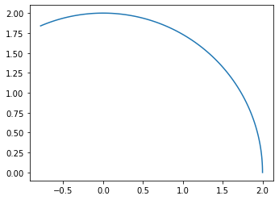
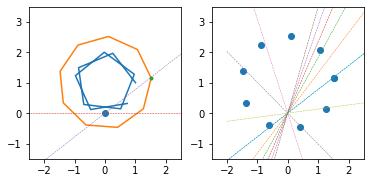
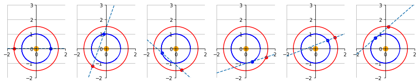

import numpy as np
import matplotlib.pyplot as plt
import math
#https://www.fisicalab.com/ejercicio/657
# Radio
r = 2 # m
# Periodo
T = 20 # s
# Velocidad Angular
w = 2 * np.pi / T # rad / s
print(np.around(w, 2),"rad/s")
# Velocidad Linear
v = w * r # m/s
print(np.around(v, 2),"m/s")
0.31 rad/s
0.63 m/s
\[ \theta (t)=\omega t+\theta _{0} \]
# angulo
#t = 120 # s
#th_0 = 0
#th = w * t + th_0 # rad
#print(np.around(th, 2),"rad")
# Espacio recorrido
#s = th * r
#print(np.around(s, 2),"m")
# ahora con vals diferentes
# angulo
t = np.linspace(0, 2.*np.pi, 100) # s
th = 0
th = w * t + th_0 # rad
---------------------------------------------------------------------------
NameError Traceback (most recent call last)
Cell In[6], line 6
4 t = np.linspace(0, 2.*np.pi, 100) # s
5 th = 0
----> 6 th = w * t + th_0 # rad
NameError: name 'th_0' is not defined
x = r * np.cos( th )
y = r * np.sin( th )
figure, axes = plt.subplots( 1 )
axes.plot( x, y )
axes.set_aspect( 1 )
plt.show()

T_terre = 365.256 # jours
R_s_t = 1 # UA
T_mars = 686.885 #jours
R_s_m = 1.52371 # UA
w_t = 2 * np.pi / T_terre # rad / s
print("w_terre",np.around(w_t, 2),"rad/s")
w_m = 2 * np.pi / T_mars # rad / s
print("w_mars",np.around(w_m, 2),"rad/s")
w_terre 0.02 rad/s
w_mars 0.01 rad/s
# we consider the period of mars
t = np.linspace(0, T_mars, 10) # s
th_0_t = 0
th_0_m = .1
th_t = w_t * t + th_0_t # rad
th_m = w_m * t + th_0_m # rad
x_t = R_s_t * np.cos( th_t )
y_t = R_s_t * np.sin( th_t ) + 1
x_m = R_s_m * np.cos( th_m )
y_m = R_s_m * np.sin( th_m ) + 1
#p1 = np.array([0,0])
#p2 = np.array([1.5,1])
#ang = np.arctan2(1, 1.5 ) # * ( 180 / np.pi)
#line_x = np.arange(0, 2, .1)
#line_y = line_x * ang
lines = list()
degs = list()
for i,lx in enumerate(x_m):
ly = y_m[i]
deg = np.arctan2(ly, lx)
line_x = np.arange(-2, 3, .1)
line_y = line_x * (deg * 1.2)
degs.append(deg)
lines.append([line_x,line_y])
xx_range = [-2.5, 2.5]
yy_range = [-1.5, 3.5]
fig, (ax,ax1) = plt.subplots( 1,2 )
ax.plot( x_t, y_t , label="earth")
ax.plot( x_m, y_m , label="mars" )
# Testing with some points
ax.scatter(0,0)
ax.plot(x_m[0], y_m[0], '.')
#ax.scatter(x_m[1],y_m[1] , c="red")
# Horizontal line
hor_x = np.arange(-3, 3, .1)
hor_y = np.zeros(hor_x.shape)
ax.plot(hor_x,hor_y,'--',linewidth = .5)
# Plotting lines
ax.plot(lines[0][0],lines[0][1], '--',linewidth = .5)
# Defining viewport limits
ax.set_xlim(*xx_range)
ax.set_ylim(*yy_range)
#ax1.scatter( x_t, y_t )
ax1.scatter( x_m, y_m )
for l in lines:
lx = l[0]
ly = l[1]
ax1.plot(lx,ly, '--',linewidth = .5)
ax1.set_xlim(*xx_range)
ax1.set_ylim(*yy_range)
ax.set_aspect( 1 )
ax1.set_aspect( 1 )
#ax.legend()
plt.show()

def plot_planet(ax, x_t, y_t, x_t_0, y_t_0, x_m, y_m, x_m_0, y_m_0 ):
xx_range = [-2, 2]
yy_range = [-2, 3]
ax.scatter(0,0, c="orange",s=100)
ax.plot( x_t, y_t , label="earth", c="blue")
ax.plot(x_t_0,y_t_0, 'o', c="blue")
ax.plot( x_m, y_m , label="mars", c="red")
ax.plot(x_m_0,y_m_0, 'o', c="red")
# Defining viewport limits
ax.set_xlim(*xx_range)
ax.set_ylim(*yy_range)
ax.spines['left'].set_position('zero')
ax.spines['right'].set_color('none')
ax.spines['bottom'].set_position('zero')
ax.spines['top'].set_color('none')
ax.grid(True)
ax.set_aspect( 1 )
def angle_between(p1, p2):
ang1 = np.arctan2(*p1[::-1])
ang2 = np.arctan2(*p2[::-1])
return np.rad2deg((ang1 - ang2) % (2 * np.pi))
# we consider the period of mars
t = np.linspace(0, T_mars, 100) # s
fig, (ax1,ax2,ax3,ax4,ax5,ax6) = plt.subplots( 1,6, figsize=(15,15) )
th_0_t = 2 * np.pi
th_0_m = np.pi
g_times = list()
g_pos_x = list()
g_pos_y = list()
slopes = list()
phiss = list()
for i in range(0,700,1):
#print("for i=" + str(i))
th_t = w_t * t + th_0_t # rad
th_m = w_m * t + th_0_m # rad
x_t = R_s_t * np.cos( th_t )
y_t = R_s_t * np.sin( th_t ) #+ 1
x_t_0 = R_s_t * np.cos( w_t * np.array([i]) + th_0_t )
y_t_0 = R_s_t * np.sin( w_t * np.array([i]) + th_0_t ) #+ 1
x_m = R_s_m * np.cos( th_m )
y_m = R_s_m * np.sin( th_m ) #+ 1
x_m_0 = R_s_m * np.cos( w_m * np.array([i]) + th_0_m )
y_m_0 = R_s_m * np.sin( w_m * np.array([i]) + th_0_m ) #+ 1
#angle_deg = angle_between(np.array([x_t_0,y_t_0]), np.array([x_m_0,y_m_0]))
#print(angle_deg,np.deg2rad(angle_deg))
point1 = np.array([x_t_0,y_t_0])
point2 = np.array([x_m_0,y_m_0])
# slope
slope = (point2[1] - point1[1]) / (point2[0] - point1[0])
line_x = np.arange(-2, 3, .1)
# Find the y-intercept
b = point2[1] - ( point2[0] * slope)
# Linear equation y = xm + b
line_y = line_x * slope + b
phii = np.arctan2((y_m_0 - y_t_0),(x_m_0 - x_t_0))
g_times.append(i)
g_pos_x.append(x_m_0)
g_pos_y.append(y_m_0)
slopes.append(slope)
if i == 0:
plot_planet(ax1,x_t,y_t, x_t_0, y_t_0, x_m, y_m, x_m_0, y_m_0 )
ax1.plot(line_x,line_y, "--")
if i == 100:
plot_planet(ax2,x_t,y_t, x_t_0, y_t_0, x_m, y_m, x_m_0, y_m_0)
ax2.plot(line_x,line_y,"--")
if i == 200:
plot_planet(ax3,x_t,y_t, x_t_0, y_t_0, x_m, y_m, x_m_0, y_m_0)
ax3.plot(line_x,line_y,"--")
if i == 300:
plot_planet(ax4,x_t,y_t, x_t_0, y_t_0, x_m, y_m, x_m_0, y_m_0)
ax4.plot(line_x,line_y,"--")
if i == 400:
plot_planet(ax5,x_t,y_t, x_t_0, y_t_0, x_m, y_m, x_m_0, y_m_0)
ax5.plot(line_x,line_y,"--")
if i == 500:
plot_planet(ax6,x_t,y_t, x_t_0, y_t_0, x_m, y_m, x_m_0, y_m_0)
ax6.plot(line_x,line_y,"--")
plt.show()

th_t = w_t * t + th_0_t# rad
th_m = w_m * t + th_0_m # rad
x_t = R_s_t * np.cos( th_t )
y_t = R_s_t * np.sin( th_t )
x_m = R_s_m * np.cos( th_m )
y_m = R_s_m * np.sin( th_m )
phi = np.rad2deg(np.arctan2((y_m - y_t),(x_m - x_t)))
plt.plot(t,phi)
[<matplotlib.lines.Line2D at 0x7fde69a360d0>]
t.shape
(100,)
def helperrr():
#Importation de nos divers modules
import matplotlib.pyplot as plt
import numpy as np
import pandas as pd
import math as mt
from math import cos
from math import sin
from math import atan2
from math import pi
from datetime import datetime
import time
"Modèle du mouvement circulaire uniforme de la Terre et de Mars dans le référentiel héliocentrique"
# Données de l'énoncé
rayon_orbitalTerre=1.496e11 #m (1*UA)
rayon_orbitalMars=2.279438e11 #m(1.52371*UA)
Trevolution_Terre=31558118.4 #s(60*60*24*365.256)
Trevolution_Mars= 59346864 #s(60*60*24*686.885)
t0=0 ; tf=26374118.4 ; pas=86400 ; intervalle = tf - t0
num_points = int(intervalle / pas) + 1 # nombre d'éléments
t = np.linspace(t0, tf, num_points)
#t_modèle=26373254400 #s (nombre de secondes du 2016/01/01 au 2016/11/01)
# Vitesses angulaires de le Terre et de Mars
wTerre=2*np.pi/Trevolution_Terre #rad/s
wMars=2*np.pi/Trevolution_Mars #rad/s
phi_0x=2*np.pi
phi_0y=np.pi
# Coordonnées de la Terre dans le référentiel héliocentrique
xTerre=rayon_orbitalTerre*np.cos(wTerre*t +phi_0x)
yTerre=rayon_orbitalTerre*np.sin(wMars*t +phi_0y)
# Coordonnées de Mars dans le référentiel héliocentrique
xMars=rayon_orbitalMars*np.cos(wTerre*t +phi_0x)
yMars=rayon_orbitalMars*np.sin(wMars*t +phi_0y)
# Expression de phi_apparent
phi_apparent=np.arctan2((yMars-yTerre),(xMars-xTerre))
plt.plot(t, phi_apparent, label = 'model')
print(type(phi_apparent))
print(type(t))
helperrr()
<class 'numpy.ndarray'>
<class 'numpy.ndarray'>